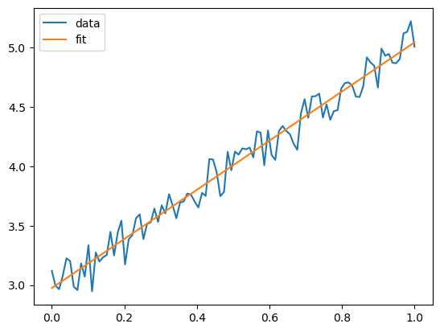

基于PyTorch的基本操作
Contents
基于PyTorch的基本操作#
这个例子和前一个例子几乎一样，唯一的不同在于我们将NumPy换成了PyTorch。因为PyTorch已经支持了NumPy的大部分功能，而且在CPU上进行计算时，速度并不慢于numpy，而且还支持可微分、可函数变换、可GPU加速等功能，所以大家写数值代码时完全可以直接基于Pytorch而非Numpy。
import torch
import scipy
import matplotlib.pyplot as plt
操作张量#
x=torch.linspace(0,1,100)
a=2
b=3
noise=0.1*torch.randn(100)
y=a*x+b+noise
使用Scipy进行线性回归#
slope, intercept, r, p, se =scipy.stats.linregress(x,y)
使用Matplotlib画图#
plt.plot(x,y,label="data")
plt.plot(x,intercept+slope*x,label="fit")
plt.legend()
plt.savefig("linear_fit.pdf")
